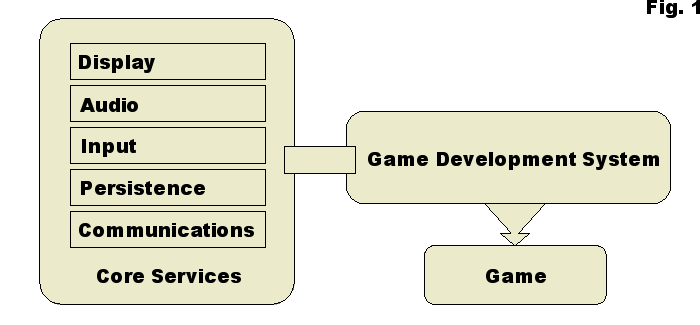
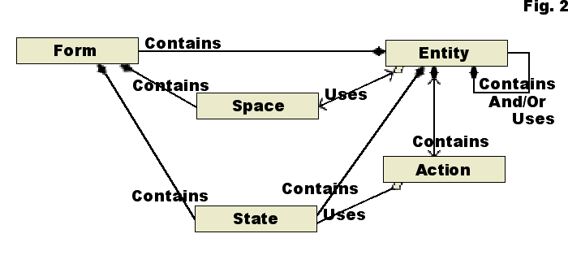
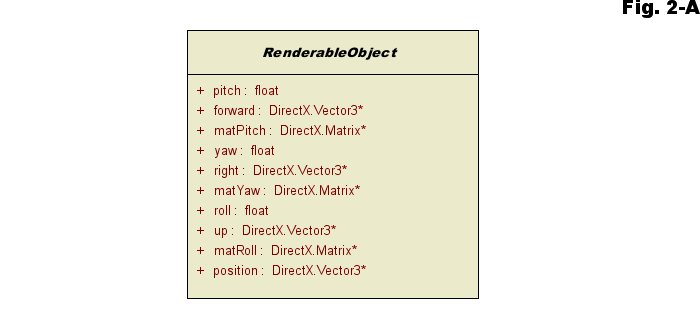
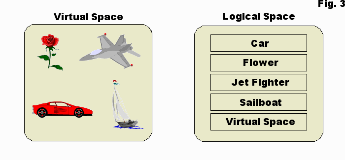
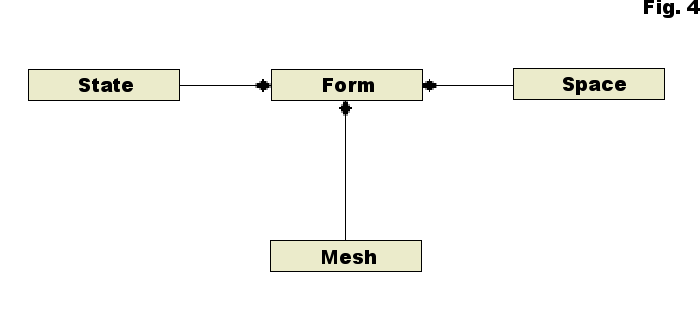
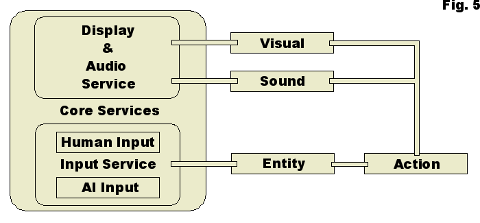
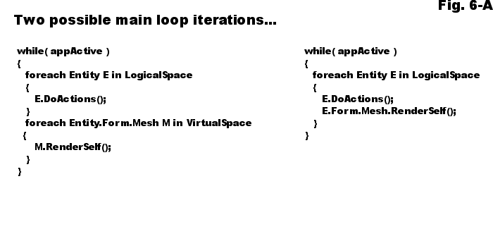

| Object-Oriented Game Design |


|
|
| A modular and logical method of designing games | ||
|
01/08/2004
|
||
IntroductionIt is fairly common knowledge that producing high-quality computer games is somewhat time intensive and normally involves a fairly large team of individuals. A list of such a team might include designers, programmers, animators, graphical artists, and sound effect artists, not to mention the business side of a project. The amount of work that it takes to bring this type of project to completion is spread fairly well throughout an entire team, yet most of the time involved is due to implementation of the software. The reasons for this are many. However, it is not impossible to reduce the time it takes to go from conception to completion of a game project. I believe that utilizing a system developed with object oriented programming techniques, we can drastically improve the way we create computer games. Through the wise use of inheritance and over-ridden methods, and thoughtful careful design of the implied base classes, I believe key game components can be made extremely versatile and absolutely reusable. Reusable in such a way that two entities created oblivious to each other could, utilizing such a development system, work together with NO changes to their code, and work together so efficiently that there will be minimal impact on highly optimized, time-intensive rendering code. I believe that this type of system could cut substantial amounts of time from the implementation process by providing game implementers with flexible, re-configurable, and efficient, game objects. Because of these beliefs, I have spent a great deal of time designing an object-oriented game development system that can aid programmers do their jobs more efficiently. This system is currently in a prototype stage, yet it has the capacity to produce mid-range quality games in as little as three months. I do not claim that it is the best way to approach game implementation, nor do I claim that the prototype is completely flawless and fully functional, but the potential of a three-month turn around on game completion time can not be ignored. And, even in its current state, it stands, as my proof that an object-oriented system is possible. At the very least, such a system can be used to prototype games extremely rapidly, which has its own benefits. Game Development OverviewThe core of this system will be familiar to game programmers. Overall, there are five software systems that must be utilized by any game development system. These are: display systems, audio systems, input systems, persistence systems, and communications systems. However, I have taken the approach of utilizing these systems as services to a game application rather than making them an integral part of the game itself. As services, these systems can be developed separately from a game, which allows them to be implemented in almost any way desired, and the game design system can set up access for these systems through interfaces, as Figure 1 suggests. The model represented by Figure 1 is very simple, yet possesses many implications in the details which it does not show. Notice that communications is one of the core services. If the communications system is properly implemented in the relationship implied by the diagram, an interesting possibility arises. A game could potentially be designed and implemented entirely without network capabilities, and then later revisited to add in those capabilities. This is something that is considered nearly impossible using current technologies. Yet, although not fully implemented, the prototype I mentioned earlier has this potential. How this is possible comes down to acknowledgement of relationships. For every type of core service in the figure there exists a relationship between that service and a game. A proper game development system, such as the one modeled in Figure 1, acknowledges all of these relationships, and therefore makes it possible for any game to utilize any of the services at any time. If a game suddenly requires communications, and the development system it has been implemented with already acknowledges a relationship to communications, it is no big deal to add the capabilities. Over the course of this article I will attempt to provide an explanation of how such a system might operate. So, what is a game development system ? What does one consist of, how does it work, and why would anyone want to use one? To start, one must establish a good understanding of all the parts a game consists of. Traditionally programmers define this on a game-by-game basis without considering games in general. In fact, most programmers view game objects as extremely specialized, and this view forces their implementation to be just as specialized. However, if one takes the approach that more than one game will be developed using the same system, and, more importantly, differing types of games, one can begin to define all the necessary components of a versatile game design system. All computer games can be broken down into 5 basic objects. These are as follows:
By building from these five basic objects, almost any computer game can be implemented, if not every computer game. Having identified the major objects required, the next step is to define how to make the objects work together to become a game. Standing alone, each of the five objects listed above has little meaning. In context with game development these five objects possess relationships that allow them to operate together as a game. These relationships are the true heart of the system, and understanding these relationships is the key to using the system effectively. The following class diagram illustrates the relationships. Each of the class types from Figure 2 and their associated relationships will be explained in turn. However, most of these classes are derived from extremely general base classes, and the purpose of the base classes needs to be addressed. In a computer application, two broad categories of object types can be established. These two categories can be labelled Renderable Objects and Non-Renderable Objects. If one considers this categorization for a moment, they will conclude that objects defined from this concept possess intrinsic states. In other words, these two types of objects possess states that will not change, and can be guaranteed to exist so that they can be operated on at any level of an object-oriented framework. However, adding any states but those that are truly intrinsic to a base level object is superfluous, and therefore much consideration must go into what states belong to a base class. In this case, defining those intrinsic states was a matter of examining the two broad types mentioned above. The Renderable Object, as the name implies, is one that can be rendered to a display of some kind. As such, this object needs data that will allow this rendering to occur if rendering is desired. There are only two possibilities that currently exist for computer rendering; however, if more arise, a system implemented in the manner I am describing would be fully capable of adjusting. Two-dimensional and three-dimensional rendering are the types most likely desired by game developers today. To be rendered in either of these mediums an object needs but two qualities: position and orientation. Thus, if the data needed to represent these two qualities is included with every Renderable object, and no other data, then it is likely that the object can always be rendered to a display system. Most of this data is shown in detail in Figure 2-A.  For an object that needs rendered, the data illustrated in Figure 2-A is the minimum data necessary to execute that rendering. Adding any more data is not required in the base class. The reason that more data is not required is that we, as yet, have no idea what is going to be rendered. We would know where the object was and what its orientation was, but there is no possible way to know its shape, therefore adding more data at this point is extraneous. The implication is that a concrete class will be derived from this base class that represents an objects shape, and that is exactly what this system does (that will be defined later). For now, we have established all the data necessary for any object that we need to render. The next broad category to consider is Non-Renderable Objects. This one is rather easy. It represents any type of object that does not need to be drawn to a display. This is just about anything that one could imagine, and therefore, it is quite impossible to define intrinsic data that all such objects might need. This base class is simply an empty abstract class that is used to differentiate it from Renderable objects. The reason it exists is primarily for identification purposes, and to maintain the concept of categorization of entities within the system. The class diagram of Figure 2-B is a good representation of this framework.
Having established that the five classes in Figure 2 derive from generalized base classes, the way these classes are designed can now be further detailed. However, the manner in which the five basic objects interact at runtime can become somewhat complex. And, explaining how just one of these classes, or its runtime counterpart, operates will not necessarily make the understanding of the game development system they are a part of become immediately clear for every reader. All of these classes are intricately interconnected through important relationships, and explaining the system requires providing the reader with an understanding of all the classes and their associated relationships. The Game Space ObjectAs depicted in Figure 3, the Game Space Object holds or contains other objects within itself. It represents a set or sets of game entities. In most computer games the game tokens interact with each other in some fashion, and are generally sorted into collections. However, in most computer game implementations the collections are created arbitrarily as needed. This system is designed with the realization that the game entities will always need to interact, and therefore requires a standard way to organize collections of game tokens. In this way, the sets could be made reusable if necessary. Figure 3 illustrates the two types of sets that are generally instantiated from the Game Space class. The Virtual Space object contains Game Form objects that are a virtual representation of an entity’s physical form. The set labelled as virtual space is a subset of logical space. The set shown contains a car, a plane, a flower and a boat, and these things simply represent what the Game Entity object looks like. This is of importance to keep in mind as the objects in virtual space are merely a representation of an entity’s physical form, and are not the entity itself. Other aspects of an Entity object are sorted into logical space, which will be explained later. The Game Space class is derived from an abstract base class that enforces minimum functionality on every set. Essentially that minimum functionality is the ability to add and remove entities, but could be extended to include things like insert for ordered sets or sort. The primary reason for separating entities into the two types of sets is optimization. Virtual space is slightly different from logical space as a virtual space is also capable of being rendered to a display system, and therefore contains only objects meant to be rendered. In fact, the interface to the core services of this game development framework expects to utilize virtual space sets for rendering. And, it is capable of using any such set, and even switching between virtual space sets at runtime. The set labelled logical space in Figure 3 is where the work gets done. One could say that virtual space contains the virtual physical form of an entity, while logical space contains the entity’s virtual soul. This is the space where the work is done to make all the entity interactions occur. There can be as many types of interactions as there are entities to interact. An example might be a player’s avatar shooting a bad guy with his or her rail gun. When this interaction event occurs something must happen in the code to acknowledge the event, and this set is essentially where that acknowledgement takes place. It is noteworthy to mention that the objects in this set are optimized in a way that eliminates inter-object conditional branching. The are no large switch/case structures being continually checked in the interaction system. No big if/else chains exist in the interaction code. There is minor conditional branching within an object itself, but no program today can be implemented without using some conditional branching. Outside of that, the important thing to keep in mind is that the game space represents sets of interacting entities. The Game State ObjectTo better define an object that is capable of interacting with another object, we use states. Objects that interact are essentially exhibiting behavior, and states can be considered as instantaneous behavior, or behavior at a specific point in time. This is where most game implementations throw reusability out the window. Game implementations tend to define very specialized classes with states carved in granite. Optimization is the primary culprit in this process of game implementation. There are places for primitive states in a class, but a reusable class needs to be considered extremely carefully before adding in states of that nature. This game development system uses State classes to represent data that entities need in order to interact with each other. These State classes help compose, or in other words define, the Form class and the Entity class, and are used at runtime by the Action object to modify an Entity objects apparent behavior. In essence, the behavior of Form and Entity objects at runtime, as well as Action objects, is controlled and modified through State objects in this system. The benefits of using a state class instead of specialized primitive variables to constrain the behavior of entities are twofold. First, once a State class has itself been defined, the game development system can utilize that State class to define any game token in any game implemented with the system. Secondly, entities can be queried for the existence of a State object at runtime by another entity, and if the entity queried possesses that State object the entity can be interacted with by the entity performing the query. The implications of this are quite interesting. Two game token objects that were designed totally oblivious to each other (encoded without explicitly referencing the other object) could still interact with each other at runtime due to the nature of the State objects and the relationships they possess. Whoa! Wait a minute, how is this possible? It is possible because we design an Action class that alters or modifies a specific State object that is relative to the type of event that the Action class models. The reasoning behind this is that State objects define and limit the behavior of game tokens, and by altering State objects we indirectly alter the behavior of the entity they define. Therefore, we interact with states and not fully defined entities to keep the system general and flexible. In so doing we disconnect the game token from its dependence on specific data. And, this allows much greater freedom in the implementation of an Entity class. As an analogy, let’s suppose we have a game token that represents a car, the behavior of which we wish to modify. Let’s say the car is a fast car and we want to make it go even faster. However, what we do not want to do is make the car faster. If we were to make the car faster, we could only affect the behavior of that car. Instead, we make the "fast" faster, and therefore ANY game token car that can go "fast" can be affected if we so choose. Much more importantly, not only could any token representing a car be affected, also, ANY game token with a "fast" behavior could potentially be modified regardless of what it is meant to represent. And, it could use the same modification method. It may sound silly at first, but think about it for a while. Potentially, very powerful optimizations lie down this path. The definition of the Action object and its relationships, which lies ahead, will help make the way this system is designed become clearer. Before continuing, however, the issue of reflection technology needs some mention. It could be argued that through reflection technology, which most modern OOP languages possess, primitive states could be used in a general way. Through reflection, most objects can be queried and their associated fields and methods can be discovered. Yet, the use of reflection technology would also keep the system dependent on the object-oriented framework through which it was utilized. Therefore, this game development system currently implements its own State objects to track the data of its Entity objects. In this way the game development system I am describing could itself be developed using any language desired or is considered important at the time. The Game Form ObjectThe Form class is depicted in Figure 2-B as deriving from a RenderableObject. In this system it is the only type of object that gets rendered. The purpose served by an instantiated Form object is, usually, very simple. It is used to represent any shape that an entity needs to be implemented to possess. A user (the person playing the game) will observe this object to BE the game token, while in truth it is not. A programmer should, at all costs, avoid becoming confused on this issue. In order to render things effectively to computer display systems, render loops must operate as expeditiously as possible. This system separates form from function to help achieve effective rendering, and to help create reusable Form classes. The idea is that we want a generalized Entity class that can use any type of Form object to represent its appearance. As shown in Figure 4, the Form class contains a Mesh. Utilizing this mesh, an instantiated Form object can be any shape a 3D Modeler can make, and this allows the Form object to look like anything a game designer wants it to. This allows for a very versatile Entity class to be created. And, since the Form object is separate from an Entity object (the game token), one can collect and sort the Form object in any way required for rendering. This can be extremely useful for sorting objects with regards to the types of render states each object requires. The Form Contains State RelationshipThrough this relationship Form objects can contain State objects, and these State objects can modify the behaviors that a Form object can exhibit in virtual space. What we want is a reusable Form object that can be used by an Entity object to represent shape. Generally, game designers and implementers want the game token to appear to exhibit the behavior it would be expected to exhibit if it were real, and the States objects are used to make this happen. These State objects are used to modify the function of a game token, and they are included in the Form object, which makes the Form object self-sufficient. In other words, the Form object possesses everything within itself, that other entities need to manipulate it. However, the fact that State objects ARE contained in the Form object is more important than what or why. The power of making "fast" faster rather than making a specific type of game token faster has already been mentioned, and this relationship enforces that doing so affects a general object rather than a specialized object. In essence the game system is acknowledging the relationship rather than the state data or the Form object. In this way the system can utilize all Form objects in the same manner regardless of what shape the Form object is supposed to be or what behavior the state data is intended to represent. This is a powerful concept in creating reusable entities. The Form Contains Space RelationshipAs Figure 2 shows, Entity contains Form, Form contains Space, and Space uses sets of Entity objects. This relationship has more meaning in relevance to the Action object, which works within the Space objects. For now it can be said that an Entity object can be implemented to represent a virtual space, as illustrated in Figure 3. This Entity object can contain a Form object, which can be used to represent the volume of that space. Since a Form object can contain Space objects, other entities can be implemented, and contained within the Form object through its relationship with Space objects. As mentioned, Action objects work within Space objects, and can be implemented to affect entire sets of entities. An Action object could make use of the mesh data contained in the Form object to impose constraints on the positioning of the entities contained within the Form object’s virtual space. It could just as easily utilize any State object data associated with the Form object to alter the States of all the entities in the set. This would make it a trivial matter to move sets of entities contained in other entities around in virtual space. The Game Action ObjectAn Entity object can be composed partly of Action objects at runtime, and the Entity object invokes the Action objects to make things happen. As the name implies, an Action class is an implementation of some task that an entity can perform. More precisely, at runtime it is the incarnation of an event. Generally, when an event occurs there is some way to tell that it occurred. The Action object is the executing code that represents this event. Thus, it is a virtual representation of an event. Action classes are designed to modify pre-specified State objects, which indirectly alter the apparent behavior of Form objects and Entity objects. As I stated earlier, the State object is somewhat like a snapshot of a behavior, or behavior at a specific point in time. In counterpart to this, the Action object is like a movie, and almost quite literally as it drives the visuals and sounds in this system. More precisely, the Action object is a sequential expression of the states contained within an Entity object. To clarify, an Action object has no meaning at a specific point in time, as it exists across an interval of time. And, while the Action object exists, it exposes the current state of the Entity object that invoked it, and can even alter the current state of another Entity object. The Action Contains Entity and Uses State RelationshipAs Figure 2 shows, the Action class possesses a bi-directional relationship with the Entity class, and therefore contains Entity class references within itself. These references represent target entities that an Action object is invoked to affect. Through the Entity object relationship, an Action object also has references to all the State objects that define an instantiated Entity object. This ability to reference the State objects is a very important relationship. As described, the entities and their forms are merely a composition of states and actions, and therefore modifying a part of an entity through this relationship is, in effect, altering the entity. The State references are implemented in an Entity object using hashtables. The Action object queries an Entity object’s state hashtable for a desired State object, and if it is present then the Action object can operate on that State object. The State object may affect how the Action object executes or the State object may be altered by the Action, and in turn, can affect the execution of some other Action object. This relationship is naturally recursive as it cascades through the Entity objects in a running game: Action modifies State invokes Action etc. As I claimed in the section on State objects, entities can affect each other without explicitly being created to do so, and they use the Action object to fulfill this claim. State objects drive the functionality of the Action objects, and specific action events are implemented to use predefined State objects. In this way, Action objects can be created separately from the game tokens that intend to use them, and yet be guaranteed work regardless of what game token they become a part of. This makes the Entity objects, and the eventual game tokens created from them, remarkably robust, and reusable. An invoked Action object works through its references to Entity objects. One reference contained in an Action object represents the "UserEntity", and this is the Entity that invoked the Action. If the "UserEntity" has Game States that affect the Action they are handled through this reference, and the way the Action functions is altered by those states. Another reference is the "TargetEntity". The "TargetEntity" represents an Entity, other than the "UserEntity", that the Action object was invoked against, and its State objects are generally the states altered by the Action object. If there is no "TargetEntity", in other words if the "TargetEntity" reference is NULL, then the Action that was invoked by the "UserEntity" also affects the "UserEntity". The third Entity reference is a "TargetSet", which is used to define an Action that can affect groups of Entity objects. This set could be built from any of the entities contained in a game space, and is essentially a subset of a game space. Any Entity in the "TargetSet" whose State objects are valid will be affected by an Action invoked upon the set. Having stated that Action objects are invoked, one might be wondering how they are invoked. An action can be invoked in two ways only. The first, and most obvious, method by which Action objects are invoked is input. A user provides an input event, and this input event can be mapped to a specific Action object that exists in a specific game token. The input invokes the action event and the action event continues to execute until it completes or until another input event cancels the action. This system can also allow for an AI user to provide action-invoking input, and provide feedback to inform the AI module of the results. However, such an AI entity would have to be designed with the framework of this system in mind. The second way an Action object can be invoked is through another Action object. This method can be subtle, and may not be easily understood. As an example, a game token, which represents an avatar, is going to invoke its Shoot action. The avatar, controlled by a user, invokes the Shoot action using an input event, a key-press. The Shoot action has as its "TargetEntity" another game token, the bad-guy. The Shoot action is one that is "self-canceling", in other words, it uses game constraints to determine its interval in time rather than waiting on input to cancel. While invoked the Action object checks for a collision with the bad-guy token, and if that collision occurs, it operates on State objects contained in the bad-guy. Since the Action object is already interacting with the bad-guy token, it checks that token’s Health state, and, if that State object meets certain constraints, the Action object invokes the Die action of the bad-guy token. This method of Action invokes Action is essentially a kind of ambient artificial intelligence. The Action Interfaces Core Services RelationshipFigure 5 displays the relationship between the Action object and the core services, and, before going on, it is beneficial to point out that the Action object drives a game’s visuals and sounds in this system. Essentially, it does this by using interfaces to the core services. However, sound and visual effects can require optimization in order to work appropriately, and therefore Action does not have full control over visuals or sounds. The Action object is more like a natural manager of these aspects. It merely makes demands that a visual or sound be initiated, and the core services does its best to provide the appropriate graphics or sound effects to go along with the action event that is occurring. Usually, if the core services are properly implemented and optimized, there will be no problem providing display and audio service updates on demand. The Game Entity ObjectThe Game Entity class is the focal point of the game development system I am describing. As Figure 2 depicts, the Entity class possesses a relationship with every other class in the system. The Entity object is composed of all these objects when instantiated at runtime, and the runtime composition of all the basic objects in the system creates a much more sophisticated object, the game token. The Entity class is merely the concept of a game token. It is not THE game token. This is a very important distinction. An executing Entity object embodies everything that the game token is, while the Entity class is anything that a game token might become. What this means is that, a Game Entity class defined as a car, becomes a token that is a car in the context of a game at runtime, but until that occurs a Game Entity is everything and nothing. In other words, the game token is an Entity object that has form, possesses state, can perform actions, and exists in the game space while the Game Entity is just a blueprint for a game token. The relationships that the Entity object possesses with the other objects in the system that allow it to interact are provided through the Game Entity "blueprint". This system recognizes that all entities will be composed of form, composed of state, composed of action, and even composed of a space set as well as exist in a space set. By acknowledging these relationships, the system is a framework in which Entity objects can work cohesively at runtime. And, they do so, very well. Once the point of implementation is reached the programmer can use a game development system entity to create a definition for game token that will already have all the data references it needs to interact. By not having to design this interaction framework, the programmer can focus on what he/she wants or needs the game token to do rather than on how he/she is going to make the token do it, and this can be a tremendous time saver. The Entity Contains State RelationshipThrough this relationship the game development system recognizes that an instantiated Entity object can have its own states. In other words, the runtime game token can possess states separate from those of the Form object it is partly composed of. This is extremely useful for "descriptive" data like names. While the states of a Form object hold data that can alter the way that Form object presents itself to a display system, to contain superfluous data, like a name, inside the Form object is inefficient. By keeping data inside the Entity object that is not critical to the way a Form object interacts with other objects in virtual space, one can make Form objects that are very robust, and useable by many different types of games. And, if the meta-data of the states inside the Entity class is carefully considered, the Entity class can also be extremely re-useable. The Entity Contains Form RelationshipI have stressed several times that separation of the Entity from the Form should be maintained. This allows the Entity class to be generalized. Therefore, it can be used to define any type of game token imaginable. Since only the designer can define how a game token is supposed to behave, and what it’s supposed to look like, keeping the Entity class general in this manner is very useful. Additionally, there are no constraints on the Form object as to the dimensions of its mesh. This provides for the Entity object to utilize two or three-dimensional objects to represent its appearance. Thus, the Entity object can look like a 2D user-interface component as easily as it can look like a 3D avatar. By acknowledging this relationship the development system I am describing allows the Entity class to define a game token that can be displayed as anything. The Entity Uses Space and Contains Action RelationshipThe relationships that allow an Entity object to interact with other Entity objects are the relationships with the Space object and the Action object. As mentioned earlier, the Space class is used to define sets of Entity objects. An Entity object uses references to these sets to acquire Action object references, which the Action object then uses to affect the entities that it ‘targets’ or references. For example, we could define an Entity as, for the sake of argument, a planet surface. To represent this planet surface we create a mesh of various terrain features, and incorporate this into our Form object and reference the Form object with our Entity object, which we have dubbed planet surface. Since all Form objects can contain Space objects, and Space objects are sets of entities, we can define other entities and make them part of that set. Since all the entities in the set are composed of Form objects, which are derived from RenderableObjects, and contain all the states necessary to be positioned in any way desired in three-dimensional space, we can define Action objects for the Entity object, which we defined as a planet surface, that can easily affect this set of entities. The action "ApplyGravity()" comes to mind, as does the action "SetEntityZToPlanetSurfaceZ@XY()". As Figure 2 illustrates and the preceding sections of this article have described, the Entity class is extremely connected in this system. However, the endpoints of these connections are as generalized as possible. This generalization allows an Entity class to be so flexible that it can be molded into anything desired by a programmer. Yet, the connections themselves are specialized, and this specialization provides a guarantee that these generalized objects will have a stable framework in which to interact. Yet again, these generalized classes can be defined to work together in a specialized way, thus becoming a game token. Using all the classes and relationships which this article has described thus far, one can create any type of game token they desire. Through its State object relationship an Entity object can possess personalized data, such as a name. Through the Form object relationship an Entity object can look like anything imaginable in 2D or 3D form. Through the Form object’s State object relationship the Entity object can possess data that affects its behavior in virtual space. Through the Form object’s Space object relationship the Entity object can hold other Entity objects within itself, thus becoming a world within a world. Through the Space object relationship that an Entity object possesses it can reference ANY other Entity object currently active in the runtime code. And, finally, through the Action object relationship an Entity object can alter another Entity object or modify that Entity object’s behavior. What more could one possibly want from a game token? Implementation Possibilities
At this point one may be wondering exactly how it would be possible implement the five objects and their associated relationships to operate together. The answer might be Abstract Classes and Virtual Methods. Perhaps a virtual method called DoAction() might be employed, and overridden in derived classes. Something like this would make it possible to iterate through a collection of Actions and for each action in set Z perform Z.DoAction(). Since the framework I have been describing consists of sets of Entity objects, perhaps making all this work simply involves iterating through a collection of entities calling Entity.DoAction() for each Entity in the Game Space. And, each Action invoked in this manner causes a request for visual and audio services, which reflect the action event. Then finally, the invoked Action object uses it target references to first modify the action, and then find and affect the State objects of an ultimate target entity. And that is basically how the system might work. Figure 6 and 6-A, pictured below, can help in visualizing this better. As can be seen in Figure 6, two sets exist inside a game entity, and the game entity exists within an application, which is providing the core services. A camera entity is providing the user with a view of virtual space, but could easily use ANY virtual space available to be displayed. The entities in logical space interact with each other through the Action objects, which can alter the virtual physical forms of their counterparts in virtual space, and the camera entity provides a new picture of the updates. How the Form object changes its mesh doesn’t matter. The Display service is doing the actual changing of the vertices of a mesh, and it could be anything from matrix calculations to motion capture animations. What matters is how fast can the Action objects perform updates? Rendering systems typically need a lot of time to do their work, and if objects can’t update what they are doing fast enough then everything can’t get displayed in time. Therein lies one of the strengths of the system I am describing. Action objects are sorted into possible actions and current actions. When the system runs through the entities in logical space it is iterating through a current actions collection, and executing only the code of Action objects contained in that collection. When an action becomes cancelled it is returned to the possible actions collection. Using this technique it is not possible to invoke the same action twice within the same iteration of the main loop. Also, since only code in the current action collection is getting executed, a lot of processor time gets saved. If an entity is not performing any actions then NO action code is executing. Not even a conditional check to see if it should execute something! Yet, through the Mesh object iteration, an entity still gets rendered using its current data. On the other side, to invoke an action, Human or AI input queries an entity’s possible action collection, and if the action is present, it can be invoked. Since these are generally input events, then no large conditional structures are required to see what actions are being invoked. The actions are simply invoked by the event. For example, a key pressed by a user makes a game token perform the run action. The same input event can cancel an action. The previous example’s user lets go of the key and cancels the run action. Some Action objects do use logic themselves to determine whether or not they need to continue executing, but this conditional logic is restrained within the Action object only. And, once such actions become invalid they return themselves to the entity’s possible action collection, while at the same time removing themselves from the current action collection. Exactly what an Action object does can only be determined by the desire of the game designer. In previous sections I made the claim that a game could be created, using this system, completely without the intention of making it multi-playable, and then the fully functioning game could be revisited to add in multi-player capability without a total re-write. I was not joking. Just as the display system can be implemented separately and optimized in its own way, so can the communications service. A game doesn’t care how a network service is functioning. A game just provides data to a network service to be transmitted, and receives data from the network to be processed. In today’s typical MMOG that boils down to mean a player’s avatar data. Since the game tokens in this system represent the avatar, and since game tokens use Action objects to interact, providing the ability to communicate to the network is a simple as creating the Action, ReportToCommService(), and providing the entity/token the ability to invoke it. The token doesn’t care what happens to the data it’s reporting, it can still do everything it could do before it had that action. What’s inside ReportToCommService() can be any code that needs to be there in order to execute the action in a secure and reliable manner. Better yet, once you have defined the Action, ReportToCommService(), EVERY game token in the system can use it, and THAT is the real beauty of this system. ConclusionFigure 6 is a very high level logical view of what a running application might look like. I’ve made several references to the term game token, but one thing that game programmers may not realize is that a game is itself a token. And, by the nature of the framework I have described, falls into a class that can be included in the framework’s sets of game space. Figure 6 labels a box as ‘Game Entity’, and this is a literal Entity object in the system. It could have been drawn in the diagram as being contained in the logical space, for in truth it most likely would exist there. And, just as any Entity object, it can possess actions and interact with other Entities. It would most likely have a Form object defined as None, and, through its Action objects, would exist as a natural interface between the other game objects and high level game mechanics/rules. Thus the game is itself a token that manages the other game tokens. The concept of game is token can not be overstressed. If the game is itself an Entity object, then it has at its disposal the same interaction benefits as any token, and can use the interaction framework to manipulate ANY token in the game. As a more concrete example of practical uses for this, I propose the concept of an Entity Factory. A programmer creates the game tokens, but tokens in themselves are not the game. Since the tokens are meant to be self-sufficient designed with this framework, then they can be used in any game created from this framework. Therefore, a programmer could create an Entity Factory to instantiate game tokens from a configuration file. The configuration file can come from a tool designed for the purpose of creating game tokens, or it could even come from a script. To bring relevance, the game IS the Entity Factory. The game instantiates the entities and configures them from rules provided by a builder through a configuration file using the interaction framework, thus altering the looks and behaviors of entities. Though the end user will define the game by what he or she sees (which is defined by token configuration), this system allows every game to be essentially the same under the hood. And, that allows for extremely rapid game development. So many things become possible when considering a game as an entity. Defined as an Entity class, an entire game becomes an instantiated object at runtime, and can be utilized as such. Not only that, but every one of the five basic objects from this system contained in the Game Entity is totally reusable and interchangeable between other Game Entities. Imagine developing a game while the game is running. Switching and interchanging parts of the game in real-time, perhaps over a network, and observing the impact of the changes while the game is already executing. It might sound a little ‘far-fetched’, but it IS possible, and this system could evolve into exactly what I am claiming. It isn’t quite there, but it’s heading in a good direction. And, now that I’ve put the notions into your heads, come on! It’s past time to break game development out of the twentieth century! |

|
|
Download source code for this article Discuss this article in the forums| © 2003-2004 DevMaster.net. All Rights Reserved. Terms of Use & Privacy Policy | Want to write for us? Click here |